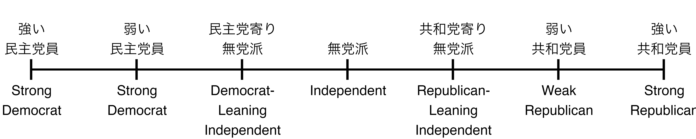
政治文化論
投票選択
宋 財泫
関西大学総合情報学部
2024-08-27
4つの情報
参加から選択へ
- 選挙を通じて自分が望む政策を実現するためには…
- 投票所に足を運ぶ（投票参加）
- 複数の選択肢から最も望ましい選択肢を選ぶ（投票選択）
- 政策応答性を高めるためには参加・選択両方が重要
- 棄権：再選が目標である政治家にとって「票にならない」人の利益を代弁する誘引がない
- 間違った選択：自分が望まない政策を実行する候補者/政党を支持
4つの情報
投票先を決める（=投票選択）際に我々が用いる4つの情報
- 支持政党
- 争点
- 候補者
- 業績
- どこに重点を置くか
- ミシガン・モデル（Campbell et al. 1960）：１〜３
- 業績投票（Fiorina 1981）：4
- その他：社会的亀裂、展望的投票など
支持政党
支持政党（党派性）とは
- 政党帰属意識（Campbell et al. 1960）
- Party Identification（PID）
- 特定の政党に対する心理的・感情的愛着 \(\fallingdotseq\) 党派性
- アメリカにおけるPID
- 民主党員（Democrat）\(\sim\)無党派（Independent）\(\sim\)共和党員（Republican）
- 党に所属しているという意味での「党員」でないことに注意
PIDの測定
- American National Election Studies（ANES）の測定法
- PID測定の定番中の定番
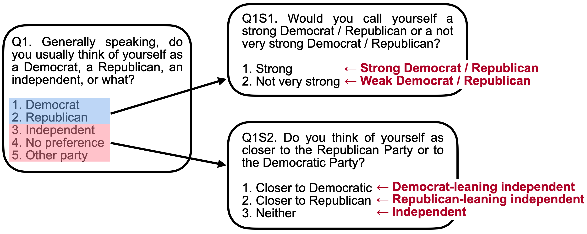
PIDの形成と維持
- 政党帰属意識は成長過程において主に両親から受け継がれる
- アメリカにおける政党帰属意識 \(\fallingdotseq\) 日本におけるプロ野球チームのファン意識（?）
- 非常に安定し、個人内において変化することがほとんどない
- …というのがCampbell et al. (1960)が見たアメリカ政治
- 1960年代以降における無党派層の増加と政党帰属意識の変動
- ベトナム戦争、公民権運動など政党帰属意識の越える大きな争点
- ミシガンモデルに対する疑問
日本における政党帰属意識
- 二大政党制のアメリカと多党制の日本
- 参考）有効政党数：アメリカは1.999、日本は2.249
- 一次元で示すことが困難（多次元で示すことは可能だが、直感的ではない）
- 政党に対する愛着の弱さ
- 政党支持態度の概念
- 政党の外部にいる人々が特定の政治集団を支持する態度
- 日本における政党支持態度の不安定性（三宅 1989）
- 2010年9月20日：自民党20.6% / 民主党52.6% (報道ステーション)
- 2013年9月29日：自民党54.0% / 民主党7.7% (報道ステーション)
党派性と投票選択
- 有権者は政治的知識が不足している場合でも、党派性を手がかりに候補者を選ぶことが可能
- 候補者の所属政党から投票先を決定
- 投票選択を説明する最も強力な要因
アメリカの例
- American National Election Studies 2020 Time Series Study
- 回答者の政党帰属意識と2020年大統領選挙の投票先
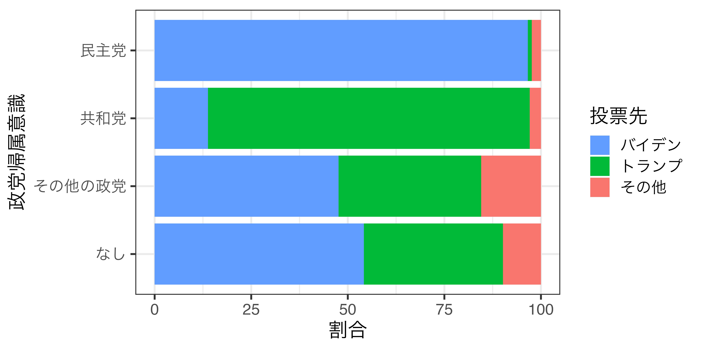
日本の例
- Japanese Election Studies IVのWave 5&6
- 回答者の支持政党と2010年参院選の投票先

支持政党の規定力
支持政党の規定力は非常に強力だが、日本はアメリカに比べ弱い
アメリカ
- 民主党支持者の96.58%がバイデンに投票
- 共和党支持者の83.27%がトランプに投票
日本
- 自民党支持者の68.84%が自民党に投票
- 民主党支持者の77.24%が民主党に投票
参考）韓国（2020年国会議員選挙）
- 与党支持者の92.5%、第一野党支持者の92.2%が支持政党に投票
政策争点に関する立場
争点投票
- 支持政党だけで投票選択がすべて説明されることはない
- 日本の場合、約3割の有権者が支持政党と異なる政党に投票
- 例）普段は自民党を支持しているが、脱原発に対する強い選好を持っているため、脱原発に反対する自民党に投票しない
- 特定の政策争点に基づいた投票：争点投票（issue voting）
争点投票の3条件
争点投票の3条件（Campbell et al. 1960）
- 有権者が争点について意見を持つ
- 有権者がその争点を重要だと認識する
- 有権者が各政党の政策立場を理解する
争点投票をめぐる論争
- 争点投票をめぐるモデル論争
- 近接性モデル（Downs 1957）
- 方向性モデル（Rabinowitz and Macdonald 1989）
- 2つのモデル統合の試み
- 割引モデル（Grofman 1985）
- 表象的政策リーダシップ・モデル（Ivernsen 1994）
- 伸縮近接性モデル（宋 2018）
問題設定
- 一つの争点をめぐる競合（SQ = 現状維持 or 中間）
- 三人の有権者（V1, V2, V3）と2つの政党（LとR）
- 争点に関する立場は-5〜5の一次元上に配置される。
- 有権者1：-5 ／ 有権者2：-1 ／ 有権者3：3
- 政党L：-4 ／ 政党R：3
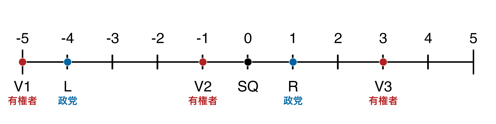
- 有権者が争点態度に基づいて投票先を決める場合、どの政党の候補者が勝つか
近接性モデルと方向性モデル
近接性モデル（Proximity Model）
- 有権者は自分に最も近い選択肢に投票
- 政党Lが当選した場合、有権者1が得る効用：\(U_{V_1, L} = -(V_1 - L)^2 = -1\)
- 政党Rが当選した場合、有権者1が得る効用：\(U_{V_1, R} = -(V_1 - R)^2 = -36\)
- \(U_{V_1, L} > U_{V_1, R}\)のため、有権者1は政党Lに投票
- 効用計算の際、二乗でなく、絶対値を使っても問題ない。
- 重要なのは具体的な数字でなく、大小関係であるため
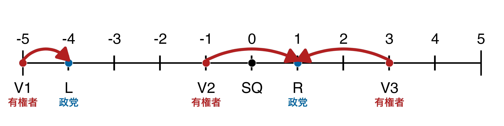
方向性モデル（Directional Model）
- 有権者と同じ方向、かつ極端な選択肢に投票
- 政党Lが当選した場合、有権者2が得る効用：\(U_{V_2, L} = V_1 \cdot L = 4\)
- 政党Rが当選した場合、有権者2が得る効用：\(U_{V_2, R} = V_1 \cdot R = -1\)
- \(U_{V_2, L} > U_{V_2, R}\)のため、有権者2は政党Lに投票
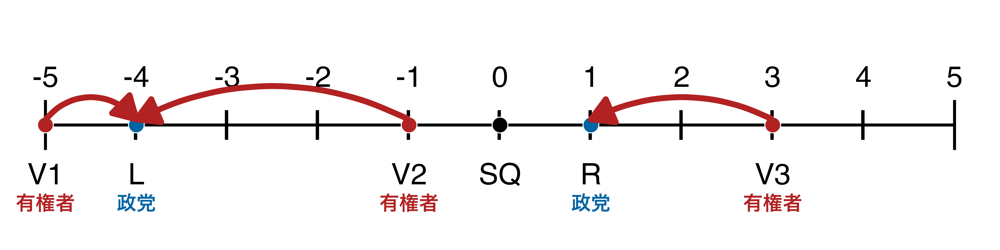
なぜ方向性モデルが成り立つか
- 常識的に考えると、近接性モデルの方が合理的（ように見える）
- 近接性モデルの問題点
- 合理的有権者の仮定
- 有権者は自分の立場、政党 or 候補者の立場を正しく認識しているか
- 合理的無知の可能性
- むしろ、目指す方向をしっかり掲げた方が票を集めやすいのでは?
- 象徴的政治（symbolic politics）から方向性モデルへ
- 投影（projection）の問題
- 一般的に争点投票の研究は世論調査データに基づく
- 各政党 or 候補者の立場も有権者に尋ねる
- 自分に近いから支持するのではなく、支持しているから近いと感じているだけ？
- 合理的有権者の仮定
投影への対処
- 各政党/候補者の政策位置を回答者に尋ねるのでなく、調査を行う側が提示
- 政党マニフェスト、選挙公報、政治家を対象とした世論調査など
- 問題点
- 実際、有権者が感じる政党の政策位置との乖離
- 一般的に各政党/候補者の公約は数値でなく文章で示される
- 文章か数値かによって異なる結果（Kropko and Banda 2018）
- 数値で見せると近接性、文章で示すと方向性へ近づく
なぜ方向性モデルが批判されるか
- 方向性モデルが成り立つ場合、極右政党・極左政党が得票しやすい。
- 実際、極右政党・極左政党が政権を取ることは非常に稀
- 許容範囲（Range of Acceptability）の概念（Rabinowitz et al. 1991）
- 有権者\(i\)が政党\(X\)から得る効用（\(U_{i, X}\)）; それぞれの政策位置は\(P_\cdot\)
- \(P_X\)が許容範囲（\(r\)）内なら\(P_i \cdot P_X\)だが、許容範囲外なら\(Penalty_{i, X}\)分引く
\[ U_{i,X} = \begin{cases} P_i \cdot P_X & \mbox{if} -r \leq P_X \leq r\\ P_i \cdot P_X - Penalty_{i, X} & \mbox{otherwise}. \end{cases} \]
- 許容範囲、ペナルティーの恣意性
- 決め方によってどんな現象でも説明可能 \(\rightarrow\) 非科学的（Westholm 1997）
許容範囲
- 許容範囲が2の場合（\(r = 2\)）
- 争点空間上の[-2, 2]外の政党/候補者の場合、効用が割引される。
- 政党Lから得られる効用が割り引かれる。
- \(Penalty_{i, X} = p|P_i|(|P_X| - r)\)（\(p\)は1以上の実数）
- 有権者2が政党Lに与えるペナルティーは\(p|-1|(|-4| - 2) = 2p\)
- 許容範囲は全員に共通（\(r_i\)でなく、\(r\)であることに注意）する仮定で問題はないか。
- 個人レベルで異なる許容範囲を仮定するモデルも存在（Weber 2015）
争点投票を巡る論争
- 争点投票のモデルに関する様々な研究（多い！）
- Rabinowitz and Macdonald (1989, アメリカ)
- Platt et al. (1992, アメリカ)
- Iversen (1994, ヨーロッパ5カ国)
- Merrill (1994, スウェーデン)
- Listhaug et al. (1994, ヨーロッパ6カ国)
- Macdonald et al. (1995, ノルウェー)
- Macdonald et al. (1995, アメリカとノルウェー)
- Merrill (1995, アメリカ、ノルウェー、スウェーデン)
- Maddens (1996, ベルギー)
- Granberg and Gilljam (1997, スウェーデン)
- Merrill and Grofman (1997, 1999, アメリカ)
- Kramer and Rattinger (1997, アメリカとドイツ)
- Pierce (1997, アメリカとフランス)
- Westholm (1997, ノルウェー)
- Dow (1998, アメリカ)
- Macdonald et al. (1998a,b, ノルウェー)
- Lewis and King (1999, ノルウェー)
- Blais et al. (2001, カナダ)
- Karp and Banducci (2002, ニュージーランド)
- 谷口 (2005, 日本)
- Tomz and Van Houweling (2008, アメリカ)
- Lacy and Paolino (2010, アメリカ)
- Pardos-Prado and Dinas (2010, ヨーロッパ21ヵ国)
- Fazekas and Meder (2013, ヨーロッパ27ヵ国)
- Weber (2015, ヨー ロッパ27ヵ国)
- …
- 現在の主流は近接性モデル
統合モデル
モデル統合の試み
- 代表的な2つの統合モデル
- 表象的政策リーダシップ・モデル（Ivernsen 1994）
- 割引モデル（Grofman 1985）
表象的政策リーダシップ・モデル
- Representational Policy Leadership Model（Iversen 1994）＿
- 有権者の情熱（passion）と理性（reason）
- 情熱：争点の重視；ある政策の実現への意思 \(\Rightarrow\) 方向性
- 理性：実現しようとする具体的な内容 \(\Rightarrow\) 近接性
- 調整因子（\(s_i\)）の導入
- 有権者\(i\)の位置：\(P_i\)／政党\(j\)の位置：\(P_j\)
- \(U_{i, j} = s_i (P_i \cdot P_j) - (1 - s_i) (P_i - P_j)^2 \quad \mbox{where} 0 \leq s_i \leq 1\)
- \(s_i = 1\)だと有権者\(i\)は方向性モデル、\(s_i = 0\)だと近接性モデルに従って投票
- 有権者ごとに異なる\(s_i\)が持つ問題
割引モデル
- Discounting Model（Grofman 1995; Merrill and Grofman 1999）
- 政策の実現可能性を考慮 \(\Rightarrow\) 割引因子（\(d\)）の導入
- 現状維持の位置を0にした場合の効用関数は…
- \(U_{i,j} = -(P_i - d \cdot P_j)^2 \quad \mbox{where} 0 \leq d \leq 1\)
- \(d = 1\)の場合、効用関数は近接性モデルと一致
- \(d = 0\)の場合、効用関数は方向性モデルと一致しないが、投票先は方向性モデルと一致
- 割引因子は全政党に共通する \(\Rightarrow\) 非現実的？
- 政党ごとに割引因子が異なるように仮定（\(d\)でなく、\(d_j\)を仮定）さすれば？
政党ごとに割引因子が異なる場合
- 政党によって政策の実現可能性が異なる考えるのが妥当
- 議席率によって政策実現可能性が異なる（Kedar 2005）
- 例）議席率60%の政党と議席率2%の政党の政策実現可能性は異なる
- 極右政党ER・極左政党Lが存在し、政策実現可能性（\(d_{ER}\)と\(d_L\)）が小さい場合
- 有権者にとって穏健右派のRより近いと感じる
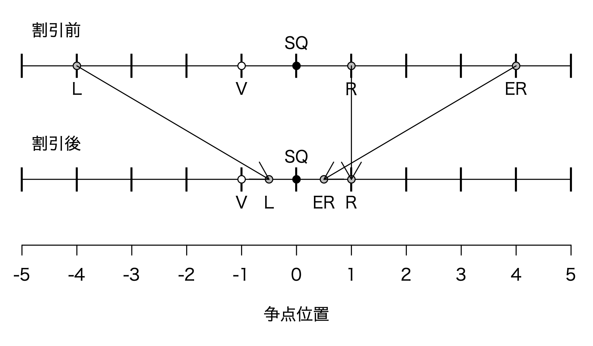
伸縮近接性モデル
Elastic Proximity Model（宋 2018）
- 有権者は自分から近い候補者を選ぶが、自分と同じ方向の場合、より近いと感じる
- 実際は\(\overline{AB} = \overline{BC} = 2\)だが…
- しかし、有権者は\(\overline{AB} < \overline{BC}\)と空間を認知
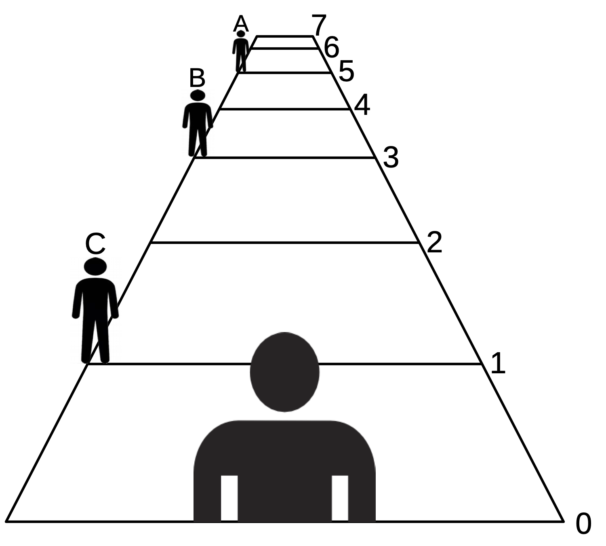
伸縮する争点空間
- 伸縮性パラメーター（\(0 < \omega \leq 1\)）の導入
- 隣接する任意の2点（\(p_i\)と\(p_j\)）間の距離は…
- \(f(p_i, p_j, \omega) = \omega^{\max(|p_i|, |p_j|) - 1} \quad \mbox{where} \quad i \neq j\)
- \(\omega = 1\)の場合、隣接する2点間の距離は等間隔
- 伸縮する争点空間における近接性モデル \(\Rightarrow\) 伸縮近接性モデル
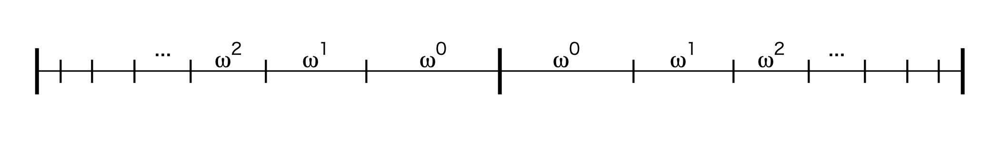
- \(\omega\)の大きさは争点ごとに異なると仮定するが、個人レベルで異なる仮定でも\(\bigcirc\)
- 宋（2018）：教育水準が高い有権者ほど\(\omega\)は1に近い（\(=\)争点空間をより客観的に認知している）
近接性モデルとの比較
- ケース2：近接性モデル\(\rightarrow\)Aに投票 ／ 伸縮近接性モデル\(\rightarrow\)Aに投票
- ケース1：選択肢に有権者が挟まれているケース（サンドイッチ・ケース）
- 近接性モデル\(\rightarrow\)Bに投票 ／ 伸縮近接性モデル\(\rightarrow\)Aに投票
- \(\omega\)の値によって異なる帰結
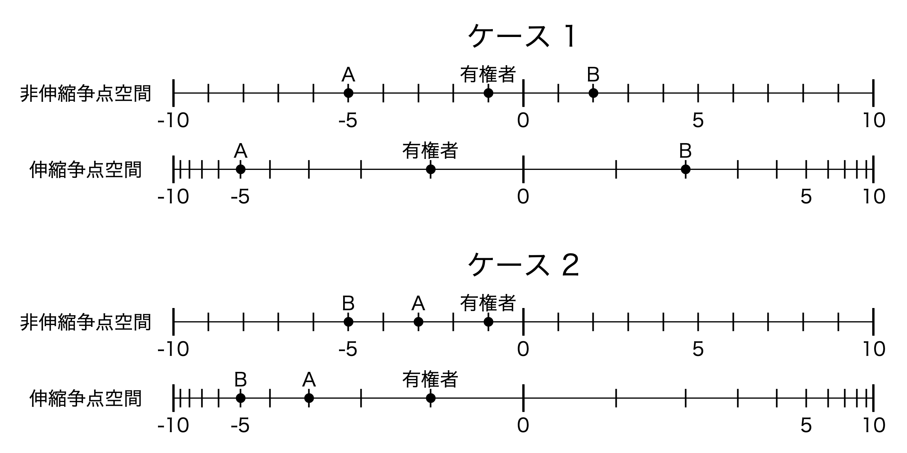
争点投票モデルの説明力
サーベイ実験による検証
- 宋が行った調査結果から測定（Web調査）
- 2017年10月30日〜11月13日
- 「Yahoo!クラウドソーシング」に登録した3691名の日本人
- 2段階構成
- Step1: 10個の争点に対する回答者の態度を測定
- 憲法改正、政府の大きさ、脱原発、尖閣諸島、消費税、税率と福祉、夫婦別姓、外交戦略、議会改革、同性婚
- Step2: 架空の2政党の政策位置を示し、投票したい政党を尋ねる
- 架空の政党、かつ政策位置は無作為に表示されるため、投影X
- Step1: 10個の争点に対する回答者の態度を測定
調査の例（憲法改正）Step 1
1週間後に衆議院議員選挙があると、まずは仮定してください。あなたの選挙区では二人の候補者が立候補しており、憲法9条改正が争点となっています。憲法9条改正に関するあなたの立場はどこに位置づけられますか。あなたのお考えに近い場所にバーを動かしてください。立場の両端は以下のことを意味します。
- -7: 憲法9条改正に反対
- 0: 中間
- 7: 憲法9条改正に賛成
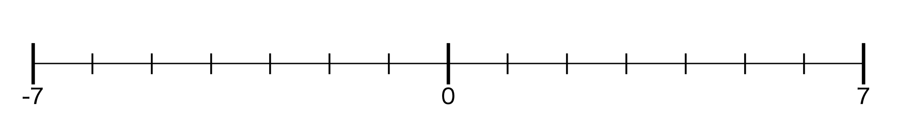
調査の例（憲法改正）Step 2
さて、あなたの選挙区内の候補者の憲法9条改正に対する立場は以下の通りです。
- あなた自身: -1 [Step1の回答]
- 候補者 A: 1 [ランダムに表示]
- 候補者 B: -4 [ランダムに表示]
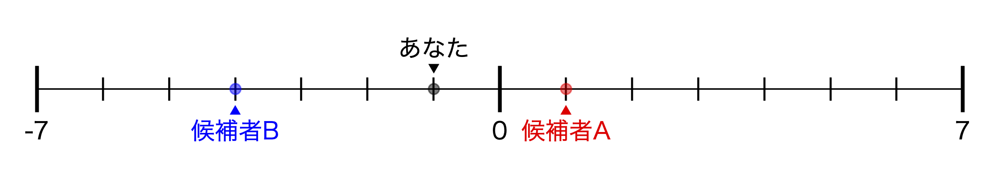
あなたは、候補者AとBのどちらに投票したいとお考えですか。はっきり言えない場合は、あえて言えばどちらの候補者か、という観点から1人、選んでください。
モデルの比較
- 「回答者の実際の選択肢」と「各モデルから予想される選択肢」の比較
- 前ページの場合、近接性モデルは候補者A、方向性モデルは候補者B
- 実際の選択肢と予想される選択肢の一致率（accuracy）を比較
参考）各争点の\(\omega\)の推定値
| 争点 | \(\omega\) | 争点 | \(\omega\) | |
|---|---|---|---|---|
| 憲法改正 | 0.897 | 税率と福祉 | 0.921 | |
| 政府の大きさ | 1.018 | 夫婦別姓 | 0.940 | |
| 脱原発 | 0.937 | 外交戦略 | 0.918 | |
| 領土問題 | 0.920 | 議会改革 | 0.909 | |
| 消費税 | 0.935 | 同性婚 | 0.957 |
モデル間比較
- 近接性モデル \(>\) 方向性モデル
- 全般的に統合モデルの一致率が高い（追加パラメーターがあるため）
| 争点 | 近接 | 方向 | 表象 | 割引 | 伸縮 |
|---|---|---|---|---|---|
| 憲法 | 89.0% | 76.4% | 88.5% | 88.7% | 89.5% |
| 政府の大きさ | 87.1% | 64.6% | 86.4% | 86.3% | 87.1% |
| 脱原発 | 90.0% | 78.4% | 90.2% | 90.2% | 90.3% |
| 領土 | 89.1% | 79.7% | 89.3% | 89.3% | 89.2% |
| 消費税 | 85.8% | 73.4% | 86.1% | 86.0% | 86.0% |
| 税と福祉 | 89.2% | 69.2% | 88.9% | 88.9% | 89.2% |
| 夫婦別姓 | 89.9% | 73.5% | 90.1% | 90.1% | 90.3% |
| 外交戦略 | 89.5% | 72.4% | 88.7% | 89.3% | 89.5% |
| 議会改革 | 91.1% | 81.3% | 91.3% | 91.1% | 91.6% |
| 同性婚 | 91.3% | 76.7% | 91.4% | 90.9% | 91.5% |
争点、党派性、イデオロギー
4つの情報
- 投票先を決める際に用いる情報
- 支持政党
- 争点
- 候補者
- 業績
- どこに重点を置くか
- ミシガン・モデル（Campbell et al. 1960）：１〜３
- 業績投票（Fiorina 1981）：4
- その他：社会的亀裂、展望的投票など
政党支持 vs. 政策
- 自分が望ましい政策を実現するためには、政策投票を行う必要がある
- 有権者は政党支持と政策、どちらを優先するか
- Horiuchi, Smith, and Yamamoto (2018)の研究
- 二人の候補者のプロフィールを提示し、投票したい候補者を選択
- 政党名は見せない
- 候補者の政策は実際 2014年に行われた衆院選における各政党の政策
- 最も評価が高かった候補者は民主党の政策を掲げた候補者
- 実際の選挙：自民党議席は61.3%、民主党議席は15.4%
- 二人の候補者のプロフィールを提示し、投票したい候補者を選択
\(\Rightarrow\) 有権者は候補者の政策よりも所属政党を重視
非合理的な有権者？
- （2014年当時、）多くの有権者は民主党の政策を支持するものの、自民党（の候補者）に投票
- 一般的に選挙における争点は複数存在
- 複数の争点に対して自分の態度、政党/候補者の態度、それぞれの重要性を認識する必要
- マニフェスト、選挙公報、候補者・政党のホームページ、討論番組など
- 情報収集のコストが膨大
- 「政治」は有権者の生活において最優先事項ではない
- \(\Rightarrow\) 合理的無知へ
- 複数の争点に対して自分の態度、政党/候補者の態度、それぞれの重要性を認識する必要
合理的無知を乗り越えて
- 情報収集のインセンティブを持たない有権者
- それでも正しい（＝自分にとって望ましい）投票先を選びたい
- 不足している情報を補完する方法
- 党派性（政党支持）
- イデオロギー
- 政党名とイデオロギーの結びつき
- イデオロギーは（理想としては）各争点に対する態度が矛盾なく一貫
- 政党のイデオロギーと自分のイデオロギーの比較
アメリカの例
- 共和党：保守
- 減税と社会保障の削減、対外的な介入の抑制、銃規制への反対、中絶反対、同性婚否定など
- 民主党：リベラル
- 増税と社会保障の拡充、民主主義を守るための積極的な対外政策、中絶・同性婚に寛容
- アメリカの有権者において政党とイデオロギーの結びつきは強い
- 政党ラベル \(\rightarrow\) イデオロギー \(\rightarrow\) 政策位置の推論 \(\rightarrow\) 投票選択
日本の場合
- 保守の自民党 vs. 革新の社会党（1996〜社民党）
- イデオロギー対立は厳しかったものの、一部の政策（対外政策＝日米安保体制）に限られる。
- \(\Leftrightarrow\) 有権者にとって重要なのは対外政策だけではない
- 対外政策以外の争点に関してはイデオロギーと政党名の結びつきが弱い
- 近年における変化
- 小さい政府志向の大きい政府志向の対立構造がより明確化
- 一方、イデオロギーと経済の結びつきは依然として弱いという研究も（Miwa, Arami, and Taniguchi 2021）
候補者の属性
候補者属性の例
- 能力
- 知名度
- 信頼性
- 誠実さ
- カリスマ性
- 親しみやすさ
- 外見・声
- …
候補者要因は常に有効か
- 投票選択において最も強力な規定要因は政党
- 党派性（政党帰属意識・政党支持態度）\(\rightarrow\) 投票選択
- ケース1）1つの政党から1人の候補者が立候補
- 政党名から投票先を選択
- ケース2）1つの政党から2人以上の候補者が立候補
- 投票できる候補者が１人の場合、政党名だけでは投票が不可能
- 複数人に投票できる制度（連記制）なら政党名だけで十分かも
- 候補者の属性が重要
- 投票できる候補者が１人の場合、政党名だけでは投票が不可能
同じ政党から複数の候補者？
一つの選挙区から上位二人以上が当選する仕組み
| 政党 | 氏名 | 得票率 |
|---|---|---|
| 日本新党 | 海江田万里 | 29.2% |
| 自民党 | 与謝野馨 | 18.2% |
| 新生党 | 柴野たいぞう | 15.9% |
| 自民党 | 大塚雄司 | 12.9% |
| 社会党 | 鈴木喜久子 | 12.2% |
| 共産党 | 筆坂秀世 | 11.2% |
| 無所属 | 今泉雲海 | 0.2% |
| 雑民党 | 東郷健 | 0.2% |
| 国民党 | 浅野光雪 | 0.1% |
| 政党 | 氏名 | 得票率 | |
|---|---|---|---|
| 維新 | 梅村みずほ | 20.9% | |
| 維新 | 東徹 | 18.9% | |
| 公明 | 杉久武 | 16.9% | |
| 自民 | 太田房江 | 16.0% | |
| 共産 | 辰巳孝太郎 | 10.9% | |
| 立民 | 亀石倫子 | 10.2% | |
| 国民 | にしゃんた | 3.7% | |
| NHK | 尾崎全紀 | 1.3% | |
| 安楽死 | 濱田健 | 0.4% |
中選挙区単記非移譲式投票制度
- 中選挙区単記非移譲式投票制度：MMD-SNTV
- 中選挙区：Multi-member district（MMD）
- 単記非移譲式投票：Single non-transferable voting（SNTV）
- 1993年の衆院選まで使用
- 各選挙区から2 \(\sim\) 6名が当選（例外あり）\(\leftarrow\) 中選挙区
- 有権者は一人の候補者に投票 \(\leftarrow\) 単記式
- 当選ラインを超えた票は同一政党の候補者へ移譲されない \(\leftarrow\) 非移譲式
- 当選が保証される得票数：\(\frac{有権者数}{定数+1}+1\)票
- 全議席は511、選挙区は129
- \(\Rightarrow\) 議席の過半数を取るには1選挙区から複数の当選者が必要
1993年の北海道1区
- 定数6の選挙区
- 自民党から3候補者、社会党から2候補者
- 自民党支持者が自民党の候補者に投票
- 誰に投票するか
- 選挙区内のサービスに注目
- 自分/自分が所属する集団/職業のために尽力する候補者に投票
- \(\Rightarrow\) 利益誘導政治（Pork barrel politics）
| 政党 | 氏名 | 得票率 | 身分 |
|---|---|---|---|
| 自民党 | 田村信孝 | 15.73 | 前 |
| 自民党 | 佐藤静雄 | 11.27 | 元 |
| 自民党 | 金石清禅 | 2.41 | 新 |
| 社会党 | 伊東秀子 | 13.57 | 前 |
| 社会党 | 池田隆一 | 11.22 | 新 |
| 公明党 | 長内順一 | 14.45 | 新 |
| 共産党 | 児玉健次 | 10.61 | 前 |
| 日本新党 | 荒井聰 | 11.57 | 新 |
| 新生党 | 松浦知子 | 6.57 | 新 |
| 無所属 | 沢田健一 | 1.20 | 新 |
| 無所属 | 阿部康彦 | 0.96 | 新 |
| 無所属 | 小林鍵三郎 | 0.44 | 新 |
候補者の身分
- 現職：報道などでは「前」と表記
- 過去の実績などがあるため、情報が得やすい
- 現職効果：現職という身分が得票に与える影響
- 元職（元）
- 前回の選挙では当選できなかったものの、その前に当選歴がある候補者
- 現職ほどではないが、過去の実績がある
- 新人（新）
- 政党名を除くと得られる情報が限定的（コストが高い）
- 定数が小さい選挙区の場合、当選に保証されるラインが高く、無所属・新人の集票に限界
現職効果
アメリカ
- Peskowitz（2017）
- アメリカの下院の場合、現職の得票率は新人より約14%高く、上院の場合、約5%高い
- de Benedictis-Kessner（2018）
- アメリカの市長選挙において現職は新人に比べ、得票率が約37%p高い
日本
- Ariga, Horiuchi, Mansilla, and Umeda（2016）
- 日本において現職効果は見られない
現職効果をどう推定するか
- 現職と新人間の得票率の比較
- 候補者の能力・資質が候補者の身分に影響を与える
- 能力・資質が高いと、前回の選挙で当選されやすく、「現職」に
- 候補者の能力・資質が今回の得票率にも影響
- 身分による効果か、能力・資質による効果かの識別が困難（内生性）
- 候補者の能力・資質が候補者の身分に影響を与える

- 回帰不連続デザイン（Regression Discontinuity Design; RDD）を用いた検証
- 詳細は今後解説
業績投票
ミシガン・モデルの限界
- 政党、政策、候補者
- 様々な情報を用いて自分が望む政策を実現される可能性を最大化
- 応答性の「予測」に必要な情報
- 予測の難しさ
- 必要な情報が膨大 \(\rightarrow\) 高い認知的負荷
- 予測が出来ても不確実性が大きい
- 一方、過去の業績は確定されているため、評価しやすい
- 過去の業績を用いて予測の精度\(\uparrow\)
- 業績投票（Downs 1957; Fiorina 1981）
二度の政権交代
- 2009年：自民党政権 \(\rightarrow\) 民主党政権
- 民主党が掲げる「大きい政府」への期待
- 展望的投票（prospective voting）
- 現状維持を掲げる自民党
- 参考）2007〜2009年の経済状況
- 民主党が掲げる「大きい政府」への期待
- 2012年：民主党政権 \(\rightarrow\) 自民党政権
- 民主党政権の業績を考慮
- 回顧的投票（retrospective voting）
賞罰投票
- V.O. Key（1966）の「賞罰投票」
- 過去の業績のみに注目する投票行動
- 二大政党制を前提し、政権与党（野党\(\times\)）の業績を重視
- 過去の実績が良ければ \(\rightarrow\) 政権与党に投票
- 過去の実績が悪ければ \(\rightarrow\) 野党に投票
- 過去の業績のみに注目する投票行動
- Downs (1957)、Fiorina (1981)との違い
- 予測の精度を高めるために過去の業績を評価
- 野党も考慮に入れる
経済投票
- 業績の中で最も注目されているのは経済
- 参考) 政治的景気循環（political business cycle; PBC）
- 対象の区分
- 社会志向投票（Sociotropic voting）：国の経済指標に注目
- 例）株価、失業率、経済成長率など
- 個人志向投票（Pocketbook voting）：自分の生活・家計に注目
- 例）景気の良し悪し、所得の増減など
- 社会志向投票（Sociotropic voting）：国の経済指標に注目
社会 vs. 個人
- 東京大学・朝日新聞共同調査
- 2014年衆院選後
- 1813名; 郵送調査
- 社会志向投票
- 「今の日本の景気はどんな状態だと思いますか。」
- 個人志向投票
- 「現在のお宅のくらしむきを1年前に比べると、どうでしょうか」
- それぞれ、3点尺度へ変換し、2014年衆院選の投票先と比較
社会 vs. 個人
- 日本では主に社会志向投票が見られる（平野 2007）
- 個人志向投票の傾向がないわけではない
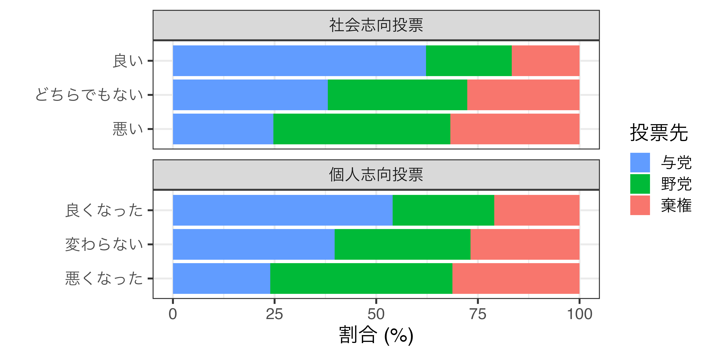
投票選択と応答性
良い政府と悪い政府
- 有権者の期待に応え、応答性を満たす政府 \(\Rightarrow\) 良い政府
- 有権者の期待に応えず、応答性を満たさなかった政府 \(\Rightarrow\) 悪い政府
- ここの「良し悪し」は価値中立的な表現
- 2009年の選挙において自民党は悪い政府
- 2012年の選挙において民主党は悪い政府
投票選択と応答性
- 選挙を通じた応答性の確保
- 良い政府には再選（報酬/アメ）を、悪い政府には下野（制裁/ムチ）を
- 業績投票は応答性を高める根幹を成すメカニズム
- 業績を評価するためには政権与党、現職政治家の業績に関する情報が必要
- ただ、与党の分裂などにより、業績の責任所在が不明瞭な場合も
- 応答性をより高めるためには、業績のみならず様々な情報が必要
- 有権者はどこから情報を仕入れるか \(\Rightarrow\) 次回
次回の案内（前半の復習）
- 授業後アンケートを実施します。以下のQRコードからアンケートへアクセスし、もう一度解説してほしい箇所を3つご記入ください。
- 内容が複数にページにまたがっている場合、最初のページ番号でご記入ください。たとえば、18〜21ページの内容を復習したい場合、18のみで回答してください。
政治文化論（2024年度夏期集中）@神戸大学